Các loại Chai thủy tinh đựng rượu


Mẫu chai rượu thủy đựng rượu
Tùy thuộc vào nhu cầu sử dụng rượu của bạn mà Chai thuỷ tinh sẽ có nhiều thiết kế kiểu dáng và dung tích khác nhau như: 250ml, 300ml, 350ml, 500ml, 650m p Mẫu chai rượu thủy tinh đẹp Bên cạnh các dạng thiết kế cơ bản, đơn giản phục vụ cho nhu cầu kinh doanh rượu. Thì iSOGLASS còn nhận thiết kế và sản xuất chai rượu thủy tinh đẹp theo yêu cầu, phù hợp làm quà tặng hoặc trưng bày, trang trí…
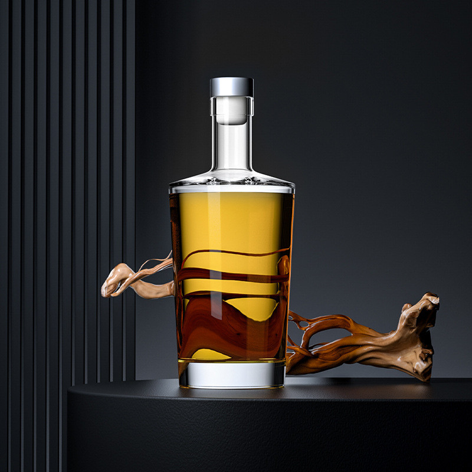Tại sao sử dụng chai thủy tinh để đựng rượu.
Thay vì sử dụng các loại bao bì khác như nhựa, sứ thì việc sử dụng chai thủy tinh để đựng rượu sẽ giúp bảo quản hương vị rượu được tốt hơn cũng như nâng cao giá trị thẩm mỹ của rượu. Vì được xử lý ở nhiệt độ cao nên chai thủy tinh sẽ được loại bỏ hoàn toàn các tạp chất gây hại cho sức khỏe cùng với đó là đặc tính trong suốt giúp bạn dễ dàng giám sát được màu sắc của rượu từ đó đánh giá được chất lượng rượu hiện tại. Ngoài ra, việc dùng chai thủy tinh đựng rượu cũng sẽ mang tính thẩm mỹ hơn nhờ kiểu dáng đa dạng, dễ dàng trưng bày và giúp tôn lên giá trị của rượu.
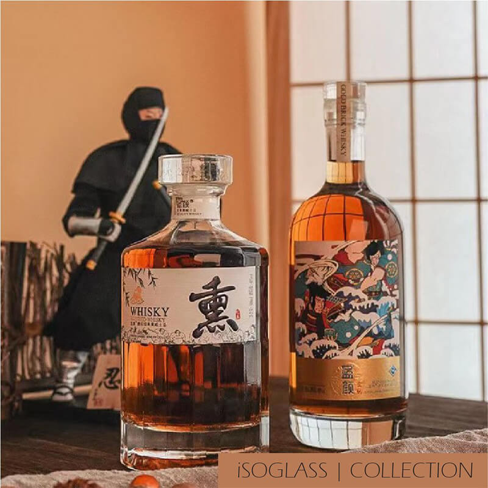Lựa chọn chai thủy tinh đựng rượu
Lựa chọn chai thủy tinh đựng rượu.
Loại chai thủy tinh nào thích hợp để chứa đựng rượu:
Thông thường sẽ là các loại chai thủy tinh dày bóng, trong suốt và có khả năng chịu được nhiệt độ cao. Ngoài ra, phần nắp chai cũng cần phải kín khí và chắc chắn để không làm bay mất mùi của rượu. Một số loại chai thủy tinh phổ biến tại iSOGLASS mà bạn có thể tham khảo:
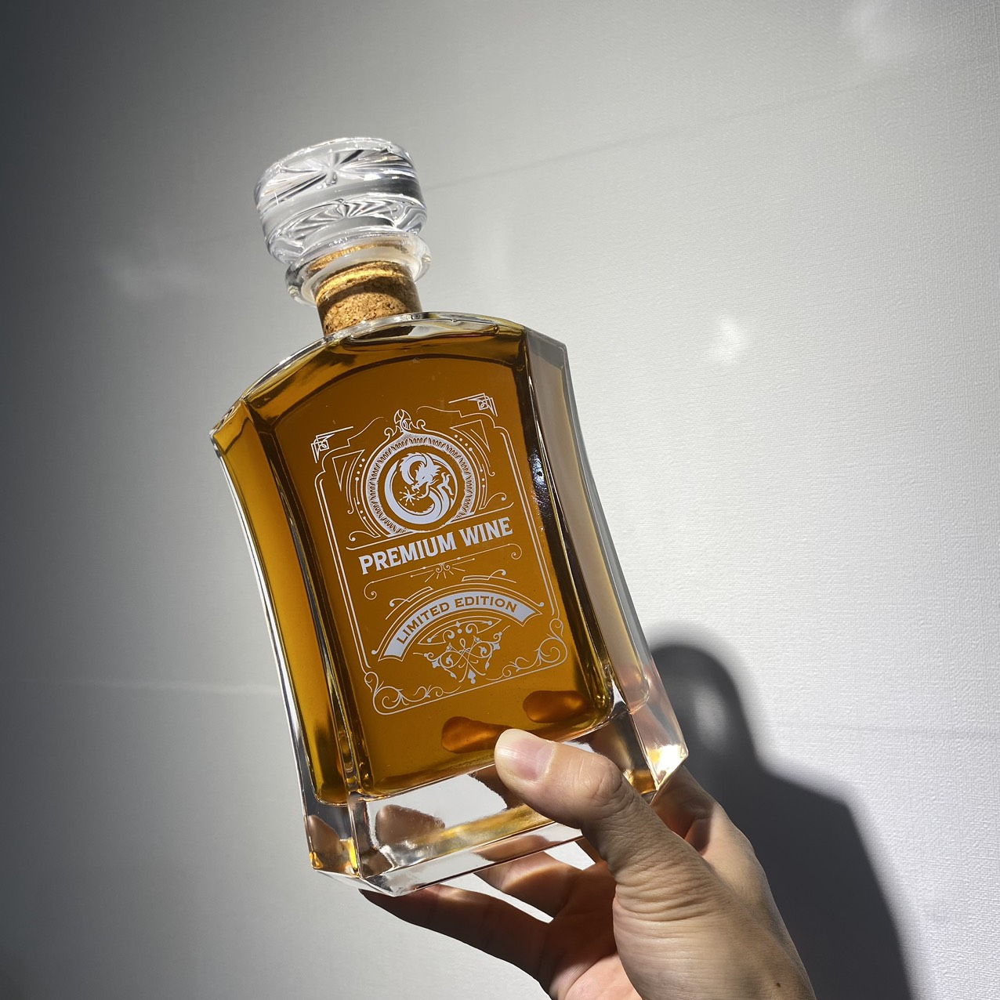Loại chai thủy tinh nào thích hợp để chứa đựng rượu
Những yếu tố cần xem xét khi lựa chọn vỏ chai rượu thủy tinh.
Cụ thể là 4 yếu tố mà iSOGLASS gợi ý cho bạn:
- Đầu tiên là nhu cầu và mục đích sử dụng: Bạn mua chai thủy tinh đựng rượu kinh doanh hay dùng cho mục đích cá nhân như làm quà tặng.
- Thứ ba là chi phí phù hợp: Sau khi đã chọn được vỏ chai ưng ý, bạn cần phải quan tâm đến giá thành của vỏ chai để đảm bảo phù hợp với túi tiền của hầu hết người sử dụng.
- Cuối cùng là chọn đơn vị cung cấp uy tín: Đảm bảo cả về chất lượng thủy tinh tốt, giá cả cũng như phải đa dạng về kiểu dáng, mẫu mã và luôn sẵn kho số lượng lớn. Đặc biệt, chính sách hậu mãi cũng cần được quan tâm.
Chức năng của chai thủy tinh đựng rượu.
Vỏ chai thủy tinh có thể giữ rượu tốt hơn:
Để sản xuất một vỏ chai thủy tinh, cần phải nung chảy các nguyên liệu ở nhiệt độ 1.000 - 2.300°C. Điều này, đã giúp loại bỏ hoàn toàn các tạp chất ảnh hưởng đến rượu. Ngoài ra, đặc tính không mùi, không thấm nước và trong suốt của thủy tinh giúp bạn dễ dàng giám sát chất lượng rượu từ bên ngoài. Vỏ chai thủy tinh có thể giữ rượu tốt hơn
Chai thủy tinh có thể giữ nguyên vị màu sắc của rượu:
Hầu hết các vỏ chai thủy tinh đựng rượu đều sẽ có thiết kế nắp đậy chắc chắn vàkín khí nên rượu đựng bên trong sẽ được bảo quản hương vị lâu hơn. Đồng thời, thủy tinh cũng là chất liệu không bị biến chất nên bạn cũng không lo chất lượng rượu bị ảnh hưởng theo thời gian.
Bình đựng rượu làm bằng thủy tinh mang lại trải nghiệm thưởng thức rượu tốt hơn các loại chai khác:
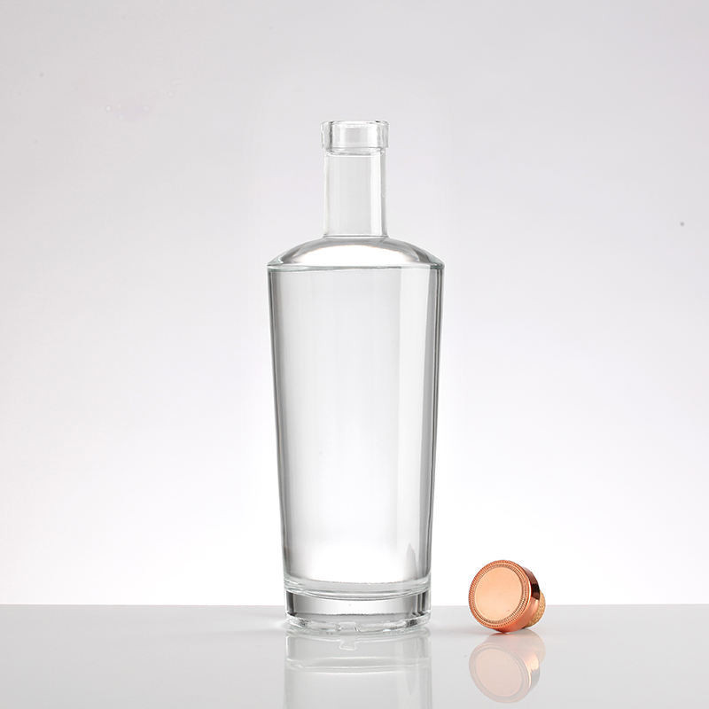Các loại chai thủy tinh đựng rượu phổ biến Dùng vỏ chai thủy tinh để đựng rượu sẽ đáp ứng được cả về yếu tố vị giác lẫn thị giác. Khi không chỉ giúp giữ trọn vẹn mùi vị của rượu mà nhờ vào thiết kế độc đáo, sang trọng của vỏ chai thủy tinh cũng giúp nâng cao giá trị thẩm mỹ và đẳng cấp của người thưởng thức.
Các loại chai thủy tinh đựng rượu phổ biến.
Chai rượu thủy tinh đơn giản:
Là dạng chai thủy tinh không quá cầu kỳ về thiết kế và thường có đa dạng hình dáng từ hình tròn, hình trụ, cổ dài…Và trên thân chai thường sẽ trơn mà không có quá nhiều hoa văn, chi tiết.
Chai đựng rượu làm bằng thủy tinh có nắp đậy, nắp cài:
là dạng chai đang được ưa chuộng nhờ việc đóng mở dễ dàng khi sử.
Chai thủy tinh đựng rượu có miệng hẹp:
Là dạng chai thủy tinh đựng rượu có thiết kế miệng chai nhỏ hơn so với các dạng chai khác, điều này giúp cho việc rót rượu dễ dàng hơn cũng như không nhanh bị tràn ly.
Chai thủy tinh đựng rượu có thiết kế đặc biệt:
Là dạng chai thủy tinh có thiết kế độc lạ, khác với các dạng truyền thống và đại trà trên thị trường. Đây cũng có thể là dạng chai được thiết kế theo yêu cầu nên sẽ phù hợp với từng nhu cầu riêng biệt cũng như gu thẩm mỹ của người dùng.
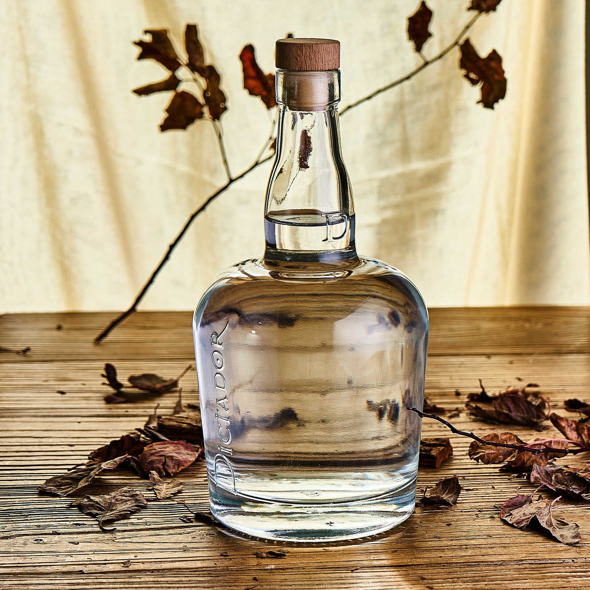Chai thuỷ tinh đựng rượu giá tốt tại TP.HCM
Chai thủy tinh đựng rượu giá rẻ:
Đối với chai thủy tinh đựng rượu giá rẻ sẽ có thiết kế tối giản nhất, kiểu dáng không quá độc đáo và vẫn đảm bảo được khả năng bảo quản chất lượng rượu trong thời gian tương đối dài.
Cách bảo quản chai thủy tinh đựng rượu:
Vì là thủy tinh nên sẽ khá dễ vỡ hoặc nứt khi bị tác dụng lực mạnh nên bạn cần lưu ý bảo quản bằng cách:
- Chọn những vị trí chắc chắn, bằng phẳng để đặt chai cũng như tránh các mép bàn, kệ…
- Trong quá trình vận chuyển, bạn nên bọc bằng giấy, mút xốp hoặc hộp đựng chắc chắn để tránh va đập
- Nên để chai thủy tinh ở nơi khô ráo để tránh ẩm mốc hay làm giảm độ bóng sáng của chúng
- Khi vệ sinh chai thủy tinh cũng thật nhẹ nhàng, không chà mạnh, không dùng vật dụng cứng để tránh tạo vết xước
- Không dùng các chất có khả năng tẩy rửa mạnh vì sẽ dễ làm bay màu của chai
Cách bảo quản chai thủy tinh đựng rượu
Làm thế nào để tẩy rửa, vệ sinh chai thủy tinh đựng rượu?
Dưới đây là một số mẹo tẩy rửa mà iSOGLASS gợi ý cho bạn:
- Ngâm qua xà phòng trong khoảng 1 tiếng trước khi cọ rửa, điều này sẽ giúp các vết bẩn mềm đi và dễ dàng tẩy trắng hơn.
- Dùng giấm và gạo để cọ rửa, vì giấm có thể làm mềm vết bẩn và gạo sẽ tạo lực ma sát làm đánh bật chúng ra.
- Dùng baking soda (muối nở) và giấm, hòa tan hỗn hợp này theo tỉ lệ 1:1 cùng 2 chén nước ấm rồi ngâm cùng chai trong vài giờ và cọ rửa.
Dù áp dụng phương pháp nào, bạn cũng cần lưu ý lựa chọn đồ chà rửa như bàn chải hay miếng bọt mềm và dùng lực nhẹ để tránh làm xước chai thủy tinh nhé!
Một số hình ảnh về chai thủy tinh đựng rượu tại iSOGLASS.
Vỏ hộp cho chai thủy tinh đựng rượu
Vỏ hộp cho chai thủy tinh đựng rượu không chỉ là một phần trang trí nổi bật mà còn là bảo vệ cho hương vị tinh tế bên trong. Nhìn chung, nó là sự kết hợp hoàn hảo giữa nghệ thuật và chức năng, tạo nên một sản phẩm đẳng cấp và sang trọng.
Khi một chiếc chai rượu được đặt trong vỏ hộp, nó ngay lập tức trở nên quý phái và độc đáo. Những họa tiết và màu sắc trên vỏ hộp thường phản ánh đặc trưng và tính cách của loại rượu bên trong. Đôi khi, những chiếc hộp được thiết kế theo phong cách cổ điển, với các họa tiết họa tiết tinh tế, tạo nên một không gian thời gian và lịch sử cho sản phẩm.
Tuy nhiên, không chỉ là về vẻ ngoại hình, vỏ hộp còn chịu trách nhiệm bảo vệ chai rượu khỏi tác động của thời gian và môi trường bên ngoài. Đối mặt với ánh sáng, nhiệt độ và độ ẩm, vỏ hộp giúp giữ cho rượu luôn giữ được chất lượng tốt nhất. Hơn nữa, chúng cũng là cách tuyệt vời để truyền đạt thông điệp về sự chăm sóc và tôn trọng đối với sản phẩm.
Tổng cộng, vỏ hộp cho chai thủy tinh đựng rượu không chỉ là một lớp bảo vệ mà còn là biểu tượng của sự đẳng cấp và sự tỉ mỉ trong quá trình sản xuất rượu. Đối với người yêu thưởng thức rượu, mỗi chiếc hộp là một câu chuyện riêng, một tác phẩm nghệ thuật nhỏ trên hành trình tìm kiếm hương vị hoàn hảo.
Vai trò của vỏ hộp cho chai thủy tinh đựng rượu.
Vai trò của vỏ hộp trong bảo quản và trình bày sản phẩm rượu không chỉ giới hạn ở việc bảo vệ mà còn mở rộng đến việc tạo ra một trải nghiệm đầy đủ cho người tiêu dùng. Đầu tiên và quan trọng nhất, vỏ hộp là một tấm chắn vững chắc, giúp ngăn chặn ánh sáng mặt trời và tác động của nhiệt độ từ môi trường bên ngoài. Điều này đặc biệt quan trọng đối với rượu, vì ánh sáng và nhiệt độ có thể gây tổn thương hương vị và chất lượng của sản phẩm.
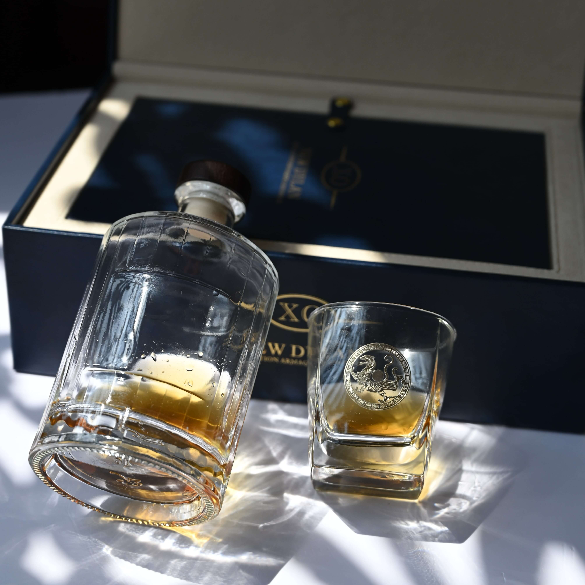Chai thủy tinh iSOGLASS sản xuất tại TP.HCM Một khía cạnh quan trọng khác của vỏ hộp là khả năng bảo vệ chai khỏi va đập và xước, giúp duy trì vẻ đẹp và sự sang trọng của sản phẩm. Bạn có thể nhìn thấy rõ điều này khi một chiếc chai được trình bày trong một hộp đẹp mắt, nơi mọi chi tiết của sản phẩm đều được làm nổi bật và bảo vệ khỏi các yếu tố tiêu cực từ môi trường xung quanh.
Ngoài ra, vỏ hộp còn là một cơ hội để thương hiệu rượu thể hiện đặc tính riêng biệt và cá nhân hóa. Thiết kế độc đáo và hấp dẫn của hộp có thể truyền đạt giá trị của sản phẩm và tạo ấn tượng mạnh mẽ trong tâm trí của người tiêu dùng. Đôi khi, hộp trở thành một phần của trải nghiệm mở nắp chai, làm tăng thêm sự hứng thú và kỳ vọng của người sử dụng.
Vỏ hộp độc đáo cho chai thủy tinh đựng rượu từ iSOGLASS.
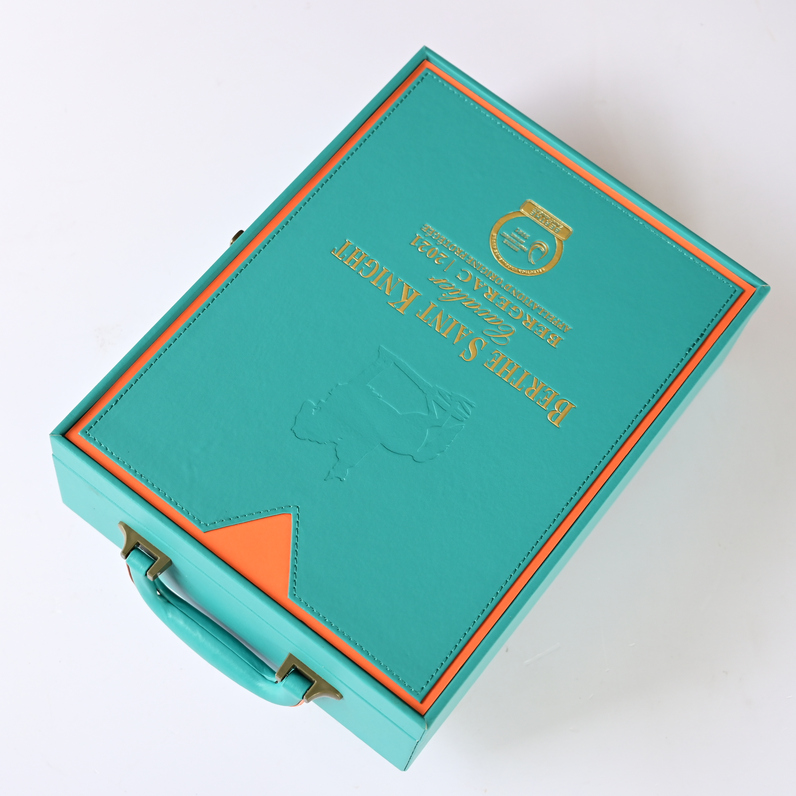Vỏ hộp độc đáo cho chai thủy tinh đựng rượu từ iSOGLASS Tại iSOGLASS, chúng tôi không chỉ chú trọng vào chất lượng chai thủy tinh đựng rượu mà còn đặt sự quan trọng vào vỏ hộp, tạo nên bộ sưu tập độc đáo và sang trọng. Dưới đây là những loại vỏ hộp đặc sắc mà chúng tôi cung cấp:
Phân loại vỏ hộp cho chai thủy tinh đựng rượu:
1. Hộp đựng vang da:
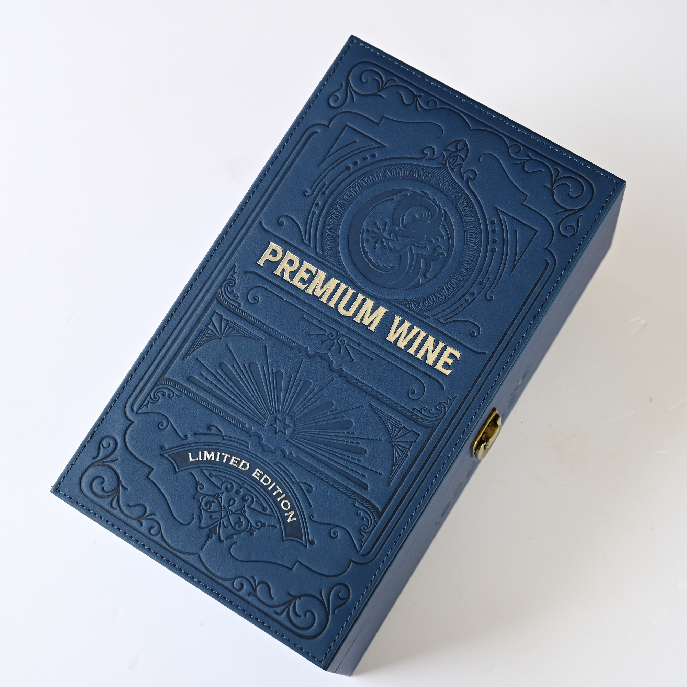Vỏ hộp cho chai thủy tinh đựng rượu Với sự sang trọng và quý phái của vang da, chúng tôi cung cấp những chiếc hộp vỏ độc đáo làm tôn lên vẻ đẹp của chai thủy tinh. Đây là sự kết hợp hoàn hảo giữa chất liệu cao cấp và thiết kế tinh tế.
2. Vỏ hộp rượu bằng gỗ:
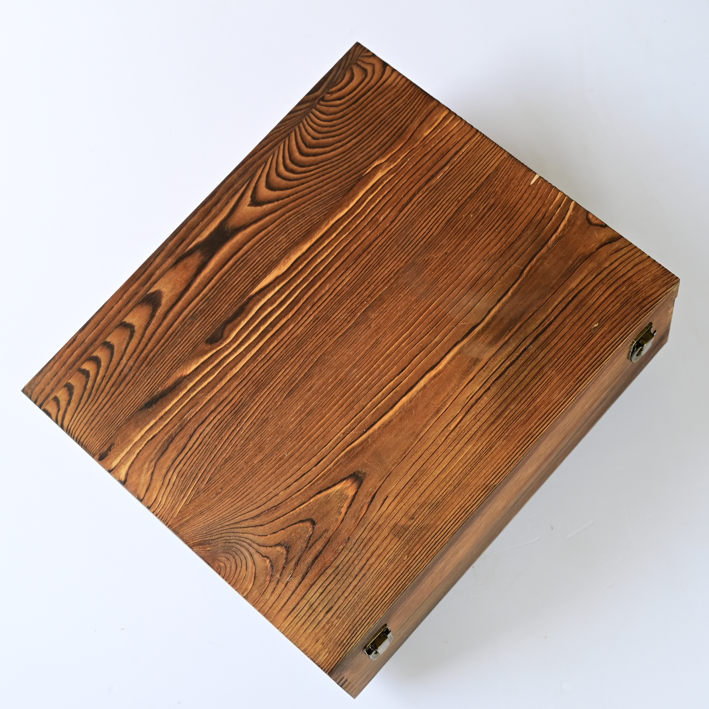3. Hộp đựng rượu bằng giấy:
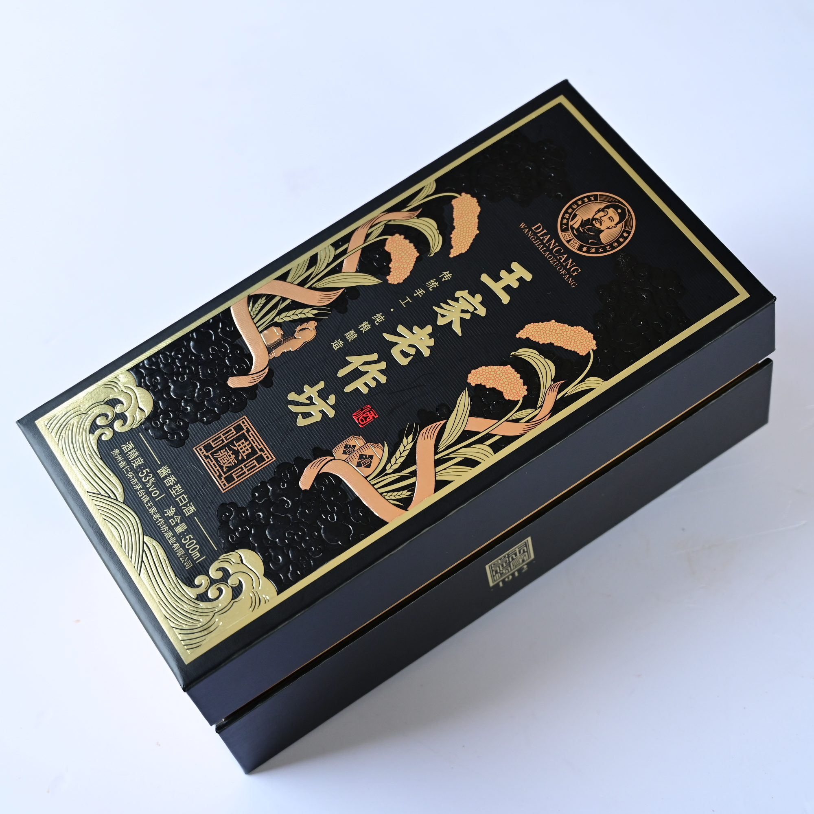Vỏ hộp cho chai thủy tinh đựng rượu Với sự nhẹ nhàng và li nh hoạt, hộp vỏ bằng giấy của chúng tôi không chỉ là một cách bảo vệ chai rượu mà còn làm tăng giátrị thẩm mỹ. Chất liệu giấy chọn lọc và kỹ thuật in ấn độc đáo làm nổi bật thương hiệu của bạn.
Đặc biệt với thương Hiệu iSOGLASS:
Chúng tôi xem xét mỗi chi tiết để tạo ra những vỏ hộp đặc biệt, phản ánh sự chăm sóc và tâm huyết của chúng tôi đặt vào mỗi sản phẩm. Thương hiệu iSOGLASS không chỉ là sự đảm bảo về chất lượng mà còn là sự cam kết đem đến cho bạn trải nghiệm tuyệt vời. Nếu bạn đang tìm kiếm sự kết hợp hoàn hảo giữa chai thủy tinh và vỏ hộp độc đáo, hãy đồng hành cùng iSOGLASS. Chúng tôi cam kết mang đến cho bạn những sản phẩm với chất lượng và phong cách không giới hạn.
Chất lượng đỉnh cao trong sản xuất vỏ hộp chai thủy tinh rượu của iSOGLASS.
Tại iSOGLASS, chúng tôi tự hào giới thiệu dịch vụ sản xuất vỏ hộp cho chai thủy tinh đựng rượu với sự chú tâm đặc biệt đến chất lượng và thiết kế. Dưới đây là những điểm nổi bật của dịch vụ của chúng tôi:
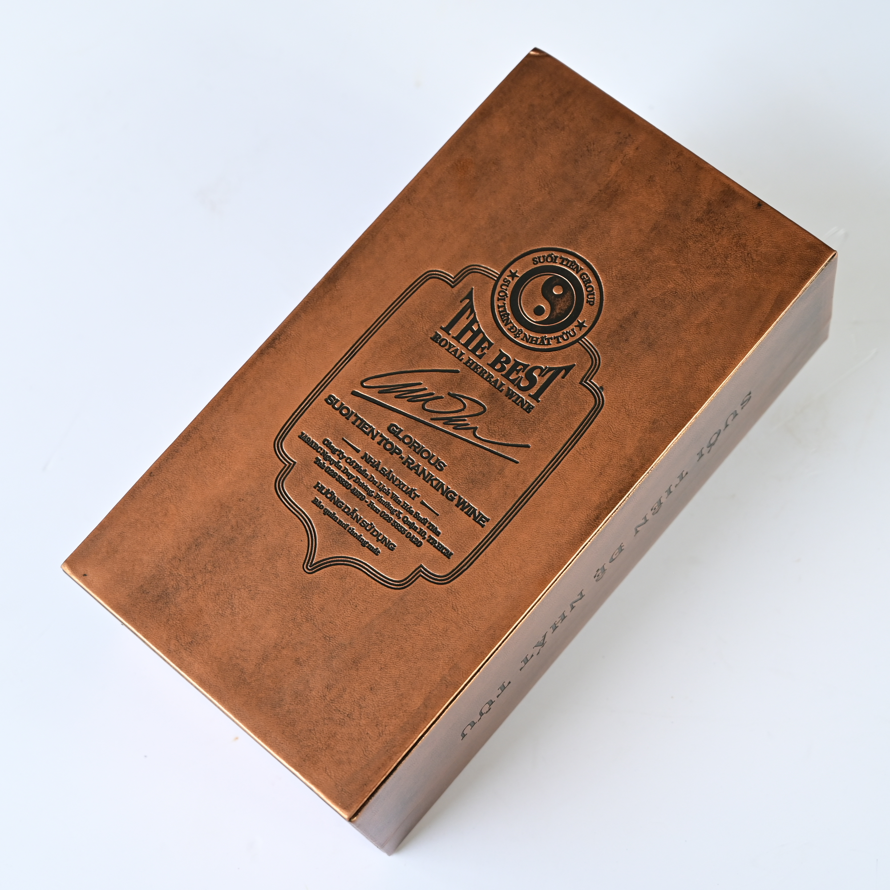Sản xuất vỏ hộp chai thủy tinh rượu của iSOGLASS
Chất liệu chọn lọc:
Chúng tôi sử dụng những nguyên liệu chất lượng cao để tạo ra vỏ hộp cho chai thủy tinh. Chất liệu được lựa chọn kỹ càng để đảm bảo sự bền bỉ và đẹp mắt của sản phẩm.
Thiết kế độc đáo và sang trọng:
Vỏ hộp của chúng tôi không chỉ là bảo vệ mà còn là tác phẩm nghệ thuật. Sự chú ý đặt vào thiết kế độc đáo, sang trọng giúp làm nổi bật và bảo vệ chai thủy tinh của bạn một cách hoàn hảo.
Tùy chỉnh theo yêu cầu:
Chúng tôi cam kết đáp ứng mọi nhu cầu của khách hàng thông qua dịch vụ tùy chỉnh. Dù là kiểu dáng, màu sắc hay logo thương hiệu, chúng tôi luôn li nh hoạt và sẵn sàng thực hiện theo yêu cầu cụ thể.
Bảo vệ hoàn hảo cho rượu:
Sự kết hợp giữa vẻ đẹp và chức năng là ưu tiên hàng đầu của chúng tôi. Vỏ hộp được thiết kế để cung cấp sự bảo vệ toàn diện, giữ cho chai thủy tinh và nội dung bên trong an toàn khỏi tác động bên ngoài.
Thương hiệu uy tín - iSOGLASS:
iSOGLASS không chỉ là một thương hiệu mà còn là đối tác đáng tin cậy. Với tầm nhìn và cam kết đặt chất lượng lên hàng đầu, chúng tôi là sự lựa chọn lý tưởng cho dịch vụ sản xuất vỏ hộp chai thủy tinh.
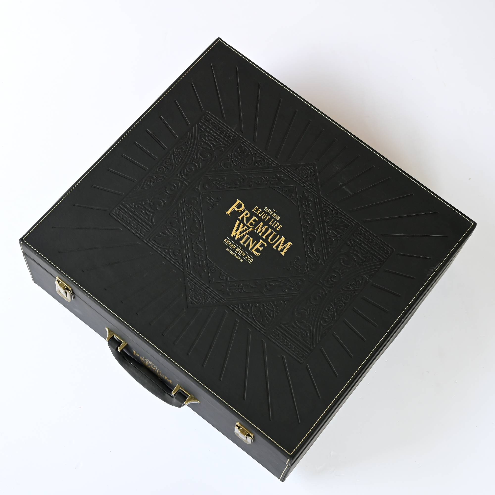Sản xuất vỏ hộp chai thủy tinh rượu của iSOGLASS
Đối tác chiến lược cho ngành công nghiệp rượu:
Dịch vụ in tem nhãn chất lượng cao cho chai thủy tinh dựng rượu tại iSOGLASS.
iSOGLASS là một công ty chuyên sản xuất và cung cấp các sản phẩm thủy tinh chất lượng cao, trong đó có dịch vụ in tem nhãn cho chai thủy tinh rượu. Với đội ngũ nhân viên chuyên nghiệp, giàu kinh nghiệm, cùng hệ thống máy móc hiện đại, iSOGLASS cam kết mang đến cho khách hàng những sản phẩm tem nhãn chất lượng cao, đáp ứng mọi yêu cầu về thiết kế, chất liệu, kích thước và số lượng.
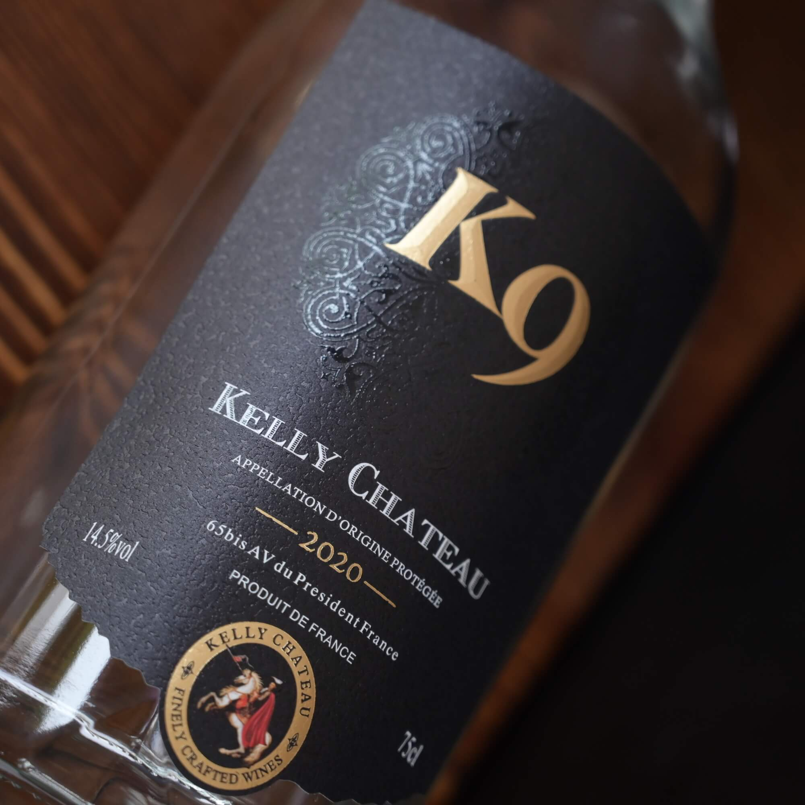sản xuất và in tem nhãn cho chai thuỷ tinh đựng rượu iSOGLASS
Đối với sản phẩm tem nhãn cho chai thủy tinh rượu, iSOGLASS sử dụng các chất liệu cao cấp như decal giấy, decal trong, decal nhựa PP, PE,... để đảm bảo độ bền, sắc nét và khả năng chống thấm nước, chống phai màu. Mực in được sử dụng cũng là loại mực in chất lượng cao, có độ bám dính tốt, không bị bong tróc trong quá trình sử dụng.
iSOGLASS cung cấp đa dạng các mẫu mã, kiểu dáng tem nhãn cho chai thủy tinh rượu, đáp ứng mọi nhu cầu của khách hàng. Khách hàng có thể lựa chọn in tem nhãn theo thiết kế sẵn của iSOGLASS hoặc thiết kế riêng theo yêu cầu.
Giá thành dịch vụ in tem nhãn tại iSOGLASS cạnh tranh, phù hợp với mọi đối tượng khách hàng. Đặc biệt, iSOGLASS có chính sách ưu đãi hấp dẫn cho khách hàng đặt in với số lượng lớn.
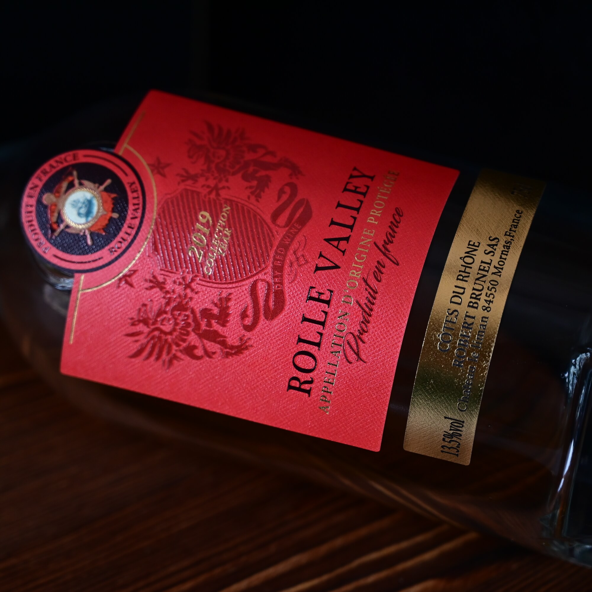sản xuất và in tem nhãn cho chai thuỷ tinh đựng rượu iSOGLASS
Dưới đây là một số ưu điểm nổi bật của dịch vụ in tem nhãn cho chai thủy tinh rượu tại iSOGLASS:
- Chất lượng tem nhãn cao cấp, đảm bảo độ bền, sắc nét và khả năng chống thấm nước, chống phai màu.
- Đa dạng mẫu mã, kiểu dáng tem nhãn, đáp ứng mọi nhu cầu của khách hàng. li Giá thành cạnh tranh, phù hợp với mọi đối tượng khách hàng.
- Chính sách ưu đãi hấp dẫn cho khách hàng đặt in với số lượng lớn.
Nếu bạn đang tìm kiếm một đơn vị cung cấp dịch vụ in tem nhãn chất lượng cao cho chai thủy tinh rượu, iSOGLASS là một lựa chọn uy tín và đáng tin cậy.
Sự tinh tế trong sản xuất và cung cấp nắp chai thủy tinh đựng rượu với thương hiệu iSOGLASS.
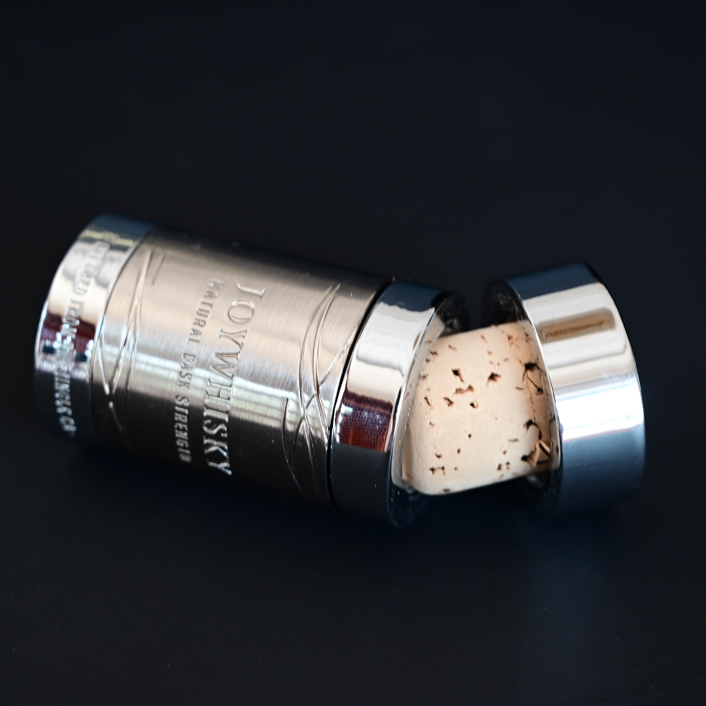Sự tinh tế trong sản xuất và cung cấp nắp chai thủy tinh đựng rượu với thương hiệu iSOGLASS Tại iSOGLASS, chúng tôi mang đến sự hoàn hảo trong việc sản xuất và cung cấp nắp chai thủy tinh đẳng cấp, đặc biệt được thiết kế để đựng rượu. Dưới đây là những điểm nổi bật và cam kết mà chúng tôi tự hào giới thiệu:
Chất liệu thủy tinh chất lượng cao:
Chúng tôi sử dụng nguyên liệu thủy tinh cao cấp, giúp bảo vệ chất lượng và hương vị tinh tế của rượu. Độ trong suốt của thủy tinh iSOGLASS không chỉ làm nổi bật sự quý phái mà còn làm tăng giá trị thẩm mỹ của sản phẩm.
Thiết kế độc đáo và tối ưu:
Với tâm huyết vào từng chi tiết, nắp chai iSOGLASS được thiết kế độc đáo, tạo điểm nhấn cho bộ sưu tập rượu của bạn. Kích thước vừa vặn và thiết kế chắc chắn giúp bảo quản rượu một cách an toàn và hiệu quả
An toàn và bền bỉ:
Cam kết về chất lượng và an toàn, chúng tôi đảm bảo rằng mỗi chiếc nắp chai đều tuân thủ các tiêu chuẩn chất lượng cao nhất. Chất liệu không tương tác với rượu, giữ cho hương vị nguyên vẹn.
Thương hiệu uy tín - iSOGLASS:
Với danh tiếng là một trong những thương hiệu hàng đầu, iSOGLASS không chỉ cung cấp sản phẩm mà còn đem đến sự đáng tin cậy và uy tín. Chúng tôi cam kết kiến tạo những sản phẩm có giá trị và chất lượng vượt trội.
Sự li nh hoạt cho mọi loại rượu:
Chúng tôi hiểu rằng mỗi loại rượu đều độc đáo. Vì vậy, chúng tôi cung cấp nắp chai thủy tinh phong phú, phù hợp cho mọi loại rượu, từ vang đỏ sang trọng đến rượu trắng nhẹ nhàng.
Giải pháp chuyên nghiệp cho ngành công nghiệp rượu:
Với kinh nghiệm và tầm nhìn chiến lược, chúng tôi là đối tác lý tưởng cho các doanh nghiệp trong ngành công nghiệp rượu. Sự hiểu biết sâu sắc về ngành giúp chúng tôi cung cấp giải pháp đa dạng và li nh hoạt cho mọi nhu cầu. Chọn iSOGLASS, bạn không chỉ chọn sản phẩm mà còn chọn sự đảm bảo về chất lượng và phong cách. Hãy đồng hành cùng chúng tôi để tạo nên những sản phẩm nắp chai thủy tinh độc đáo và ấn tượng cho bộ sưu tập rượu của bạn.
iSOGLASS - Sản xuất Chai Thủy Tinh Đựng Rượu Theo Yêu Cầu: Chất Lượng và Đẳng Cấp
iSOGLASS là thương hiệu hàng đầu trong lĩnh vực sản xuất chai thủy tinh đựng rượu theo yêu cầu, mang đến cho khách hàng những sản phẩm chất lượng cao và đáp ứng mọi yêu cầu. Với sự kết hợp giữa kinh nghiệm và công nghệ tiên tiến, chúng tôi tự hào là đối tác tin cậy của bạn. Chúng tôi hiểu rằng mỗi khách hàng có những yêu cầu riêng biệt khi sản xuất chai thủy tinh để đựng rượu.
Vì vậy, iSOGLASS đã đầu tư vào quy trình sản xuất chuyên nghiệp và thiết bị hiện đại để đảm bảo rằng mỗi chiếc chai được sản xuất theo yêu cầu sẽ hoàn hảo từ kích thước, hình dáng cho đến chất liệu.
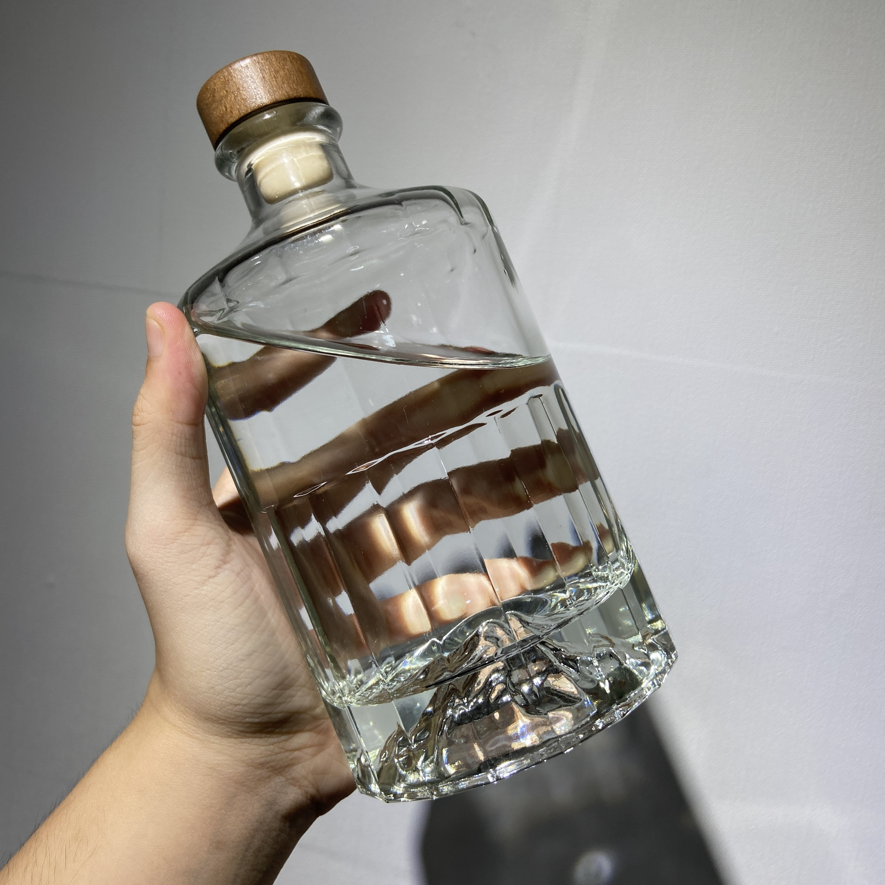Sản xuất Chai Thủy Tinh Đựng Rượu Theo Yêu Cầu: Chất Lượng và Đẳng Cấp Với đội ngũ kỹ thuật viên giàu kinh nghiệm, iSOGLASS tự tin rằng chúng tôi có thể đáp ứng mọi yêu cầu của khách hàng trong việc sản xuất chai thủy tinh đựng rượu. Chúng tôi không chỉ tạo ra những sản phẩm đẹp mắt mà còn đảm bảo tính chính xác và an toàn cho việc đựng rượu.
Với việc sử dụng nguyên liệu thủy tinh chất lượng cao nhất, iSOGLASS cam kết tuân thủ các tiêu chuẩn quốc tế và quy trình kiểm soát chất lượng nghiêm ngặt. Điều này đảm bảo rằng mỗi chai thủy tinh được iSOGLASS sản xuất đạt được sự hoàn hảo và an toàn cho việc lưu trữ và thưởng thức rượu.
Ngoài việc cung cấp chai thủy tinh theo yêu cầu, iSOGLASS còn hỗ trợ khách hàng trong việc thiết kế và phát triển sản phẩm. Chúng tôi luôn lắng nghe ý kiến và đáp ứng mọi yêu cầu để mang lại giải pháp tối ưu nhất cho khách hàng.
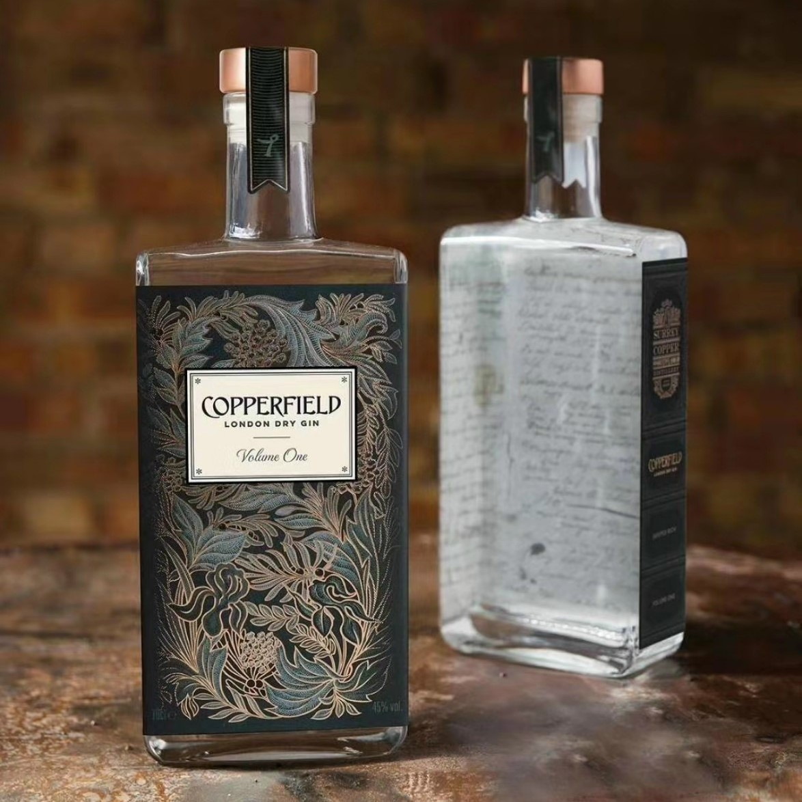Sản xuất Chai Thủy Tinh Đựng Rượu Theo Yêu Cầu: Chất Lượng và Đẳng Cấp Với uy tín đã được khẳng định và chất lượng vượt trội, iSOGLASS tự tin là đối tác tin cậy trong việc sản xuất chai thủy tinh đựng rượu theo yêu cầu. Hãy để chúng tôi mang đến cho bạn sự chuyên nghiệp và đẳng cấp trong từng sản phẩm chai thủy tinh.